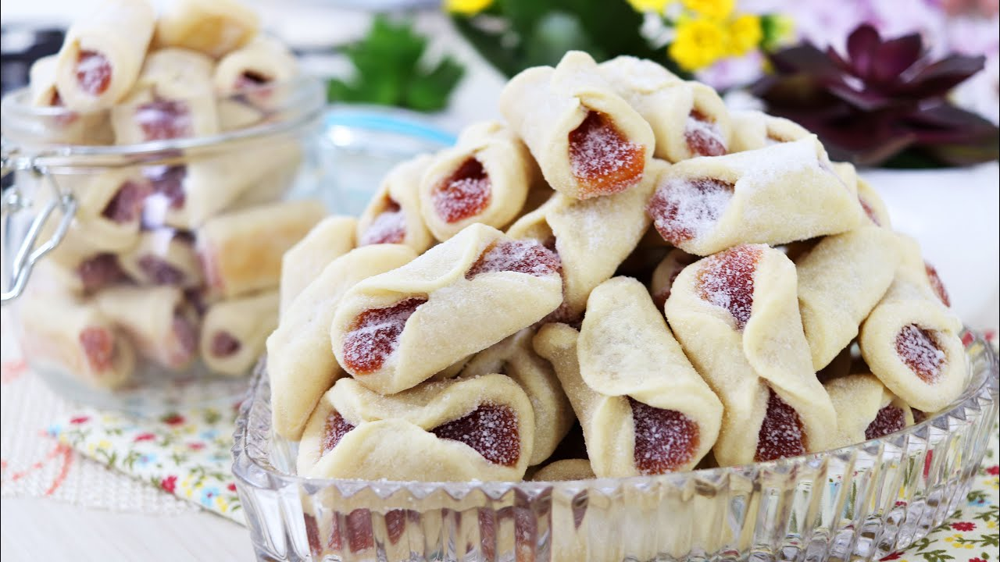

Biscoito de Goiaba

Desfrute do prazer de preparar e saborear biscoitos de goiaba em casa com esta receita simples e deliciosa.
A massa amanteigada e o doce recheio de goiaba criam uma combinação irresistível que certamente agradará a todos. Siga os passos fáceis e delicie-se com esses biscoitos caseiros que vão encantar seus momentos de lanche!
Ingredientes
- 200g de manteiga sem sal em temperatura ambiente
- 1 xícara (200g) de açúcar
- 1 ovo
- 1 colher de chá de essência de baunilha
- 2 ½ xícaras (315g) de farinha de trigo
- 1 colher de chá de fermento em pó
- Goiabada cortada em cubos pequenos
- Açúcar de confeiteiro para polvilhar
Etapas
- Pré-aqueça o forno a 180°C. Forre uma assadeira com papel manteiga.
- Em uma tigela grande, bata a manteiga e o açúcar até obter uma mistura leve e cremosa.
- Adicione o ovo e a essência de baunilha e bata até ficar bem combinado.
- Em seguida, adicione a farinha de trigo e o fermento em pó à mistura e misture até formar uma massa homogênea.
- Em uma superfície enfarinhada, abra a massa com um rolo até atingir uma espessura de cerca de 0,5 cm.
- Use um cortador de biscoitos para cortar a massa em círculos. Coloque metade dos círculos na assadeira preparada.
- Coloque um pequeno cubo de goiabada no centro de cada círculo de massa na assadeira.
- Cubra cada biscoito com outro círculo de massa e pressione as bordas para selar.
- Asse no forno pré-aquecido por 12-15 minutos, ou até que os biscoitos estejam levemente dourados.
- Retire do forno e deixe esfriar completamente na assadeira.
- Uma vez frios, polvilhe os biscoitos com açúcar de confeiteiro.
- Sirva e aproveite esses deliciosos biscoitos de goiaba!